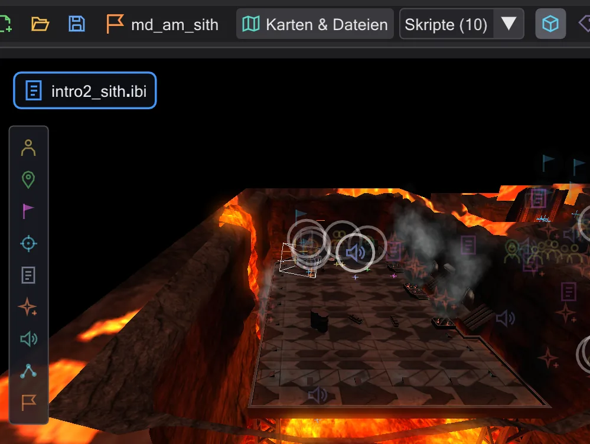
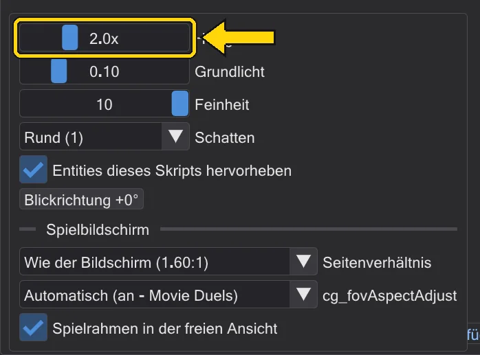

Die Karte
Die Karte in 3D, gezeichnet wie im Spiel - mit Licht, Glühen, Nebel, Effekten und den Figuren des Skripts.

Eine Karte öffnen#
Schalte in der Modusleiste auf Karte. Eine Mission bringt ihre Karte mit (Missionen). Ohne Mission öffnet Karten Dateien eine Karte von der Platte oder aus einem .pk3 oder lädt eine eigene .ent-Datei. Scripts (N) nennt die Skripte, auf die die Entities der Karte zeigen - eines wählen lädt seine Zwischensequenz.
Sich bewegen#
| W A S D (Maus über der Ansicht) | Fliegen; Q / E runter und hoch, Umschalt schneller |
| Rechte Maus ziehen | Umsehen |
| Mittlere Maus ziehen | Verschieben |
| Alt + mittlere Maus | Umkreisen |
| Mausrad | Zoomen |
| Doppelklick auf eine Entity in der Liste | Hinfliegen |
| Strg + 1 ... 9 | Ansicht merken; 1 ... 9 springt zurück (je Karte) |
Was gezeigt wird#
Die Knöpfe rechts in der Leiste schalten Teile des Bildes an und aus: Entities, Namen, die Figuren des Skripts, Effekte, Glühen, dynamisches Licht, Nebel und Himmel. Draufsicht schaut wie eine Landkarte senkrecht hinunter und schneidet alles über der Schnitthöhe weg - die Höhe ziehen zeigt ein anderes Stockwerk. Ansicht einstellen (Zahnrad) enthält Helligkeit, Umgebungslicht, Detail, Figurenschatten und Entities dieses Skripts hervorheben, das alle Entities abblendet, die das aktive Skript nicht benutzt.

r_DynamicGlow), Nebel (r_drawfog), dynamische Lichter, Lens-Flares, Wetter und Klingenspuren. Statistik zeigt Bildrate, Texturen und Werte der Grafikkarte, wenn etwas falsch aussieht.